| 💬 微信名： | Nump | 📞 电话： | 13585976294 |
| ♐ 星座： | 射手座 | 📱 世代： | Z2006 |
| 📌 毕业专业： | 上海大学 智能制造（本科） | 🎨 爱好擅长： | 唱歌、跳舞、做手工 |
| ✍ 座右铭： | 如犬，赤诚无忧 | ||
| 机械原理与机械设计 | 工程力学 | 流体力学与传热学 | 控制工程基础 | 工业人工智能 |
| 项目 | 救援机器人项目 |
|---|---|
| 时间 | 2026 年 8 月 20 日 |
| 能力表现 | 理论落地工具应用协同沟通AI 协同 |
| 项目描述 | 参与救援机器人项目，将机械原理、工程力学等理论知识落地到机器人结构设计；熟练运用 SolidWorks 等工具完成建模；通过团队协同沟通推进方案迭代；并借助 AI 辅助完成设计与优化。 |
作品说明围绕余弦相似度展开的定位式综合调研报告：系统梳理其数学定义与「尺度不变性」核心特性，论证其与皮尔逊相关系数、欧氏距离的等价关系；覆盖信息检索、语义检索、推荐系统、文本去重与机器学习等应用范式；辨析学术争议与常见认知误区，并梳理历史发展时间线。
成果形式Word 调研报告 + PPT 讲解（共 13 页）
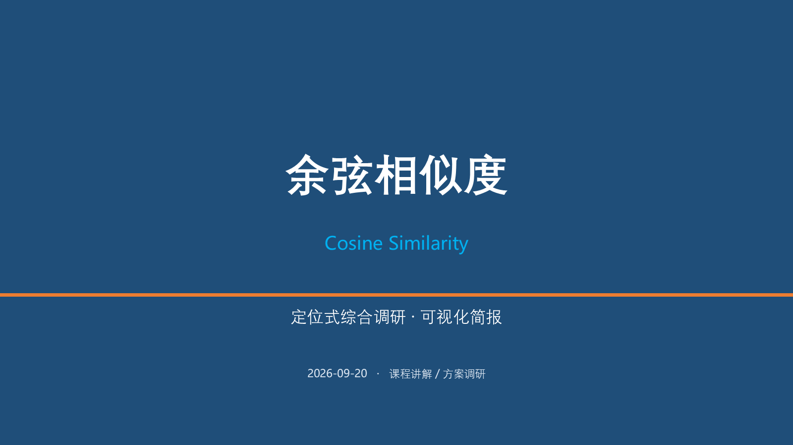
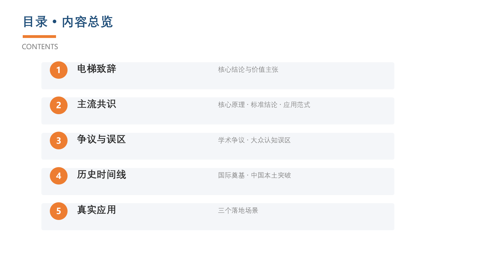
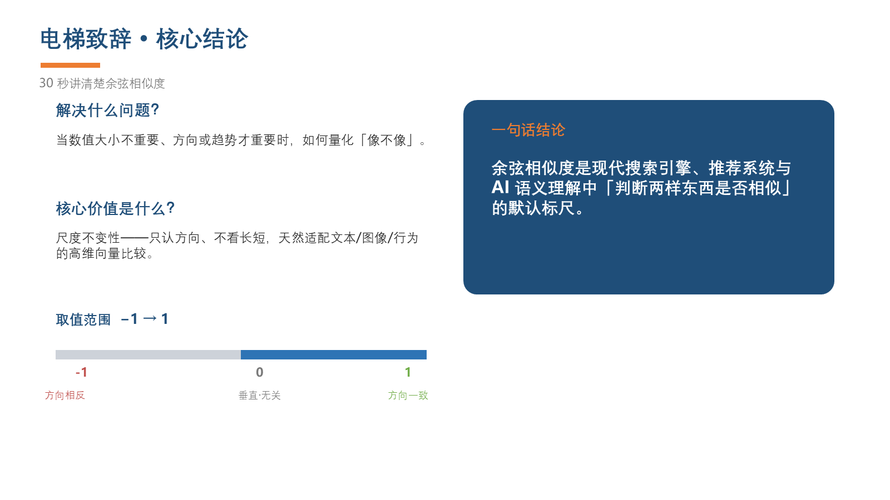
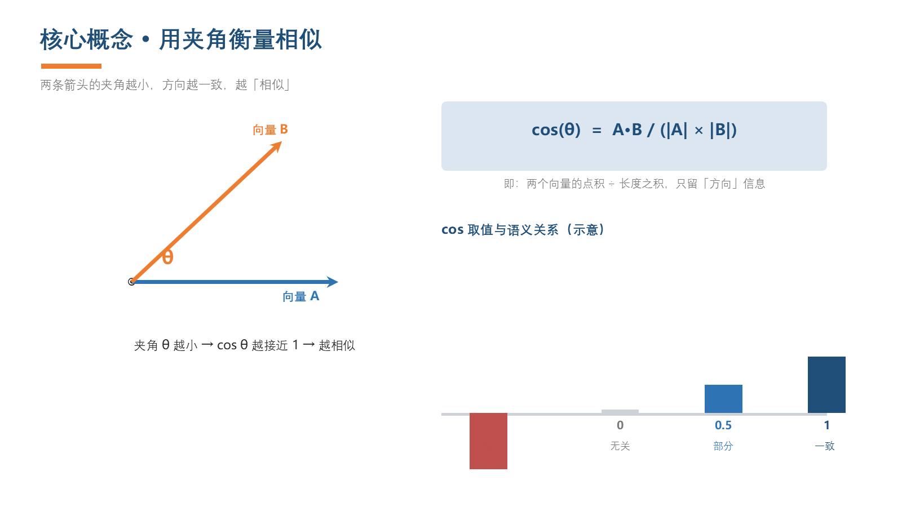
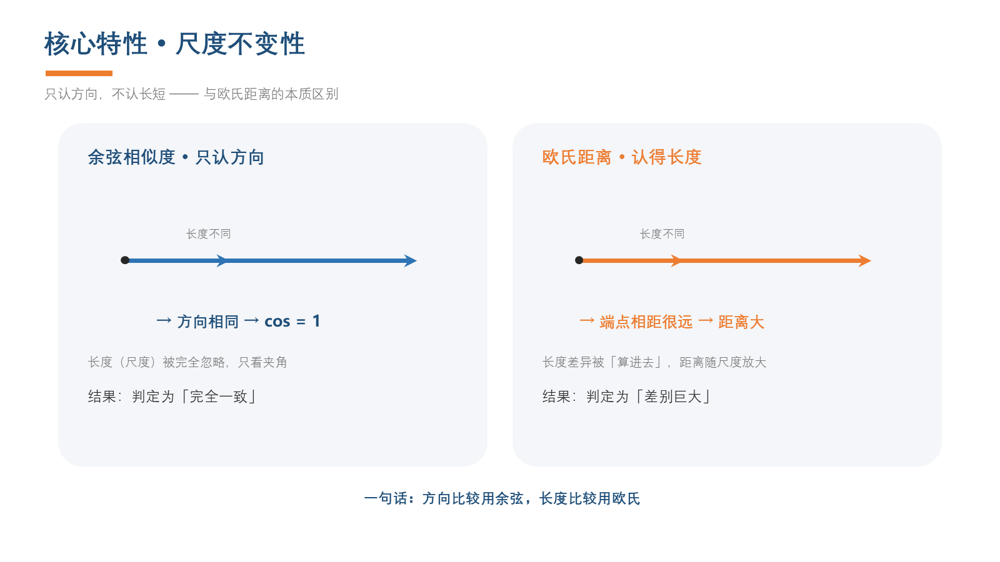
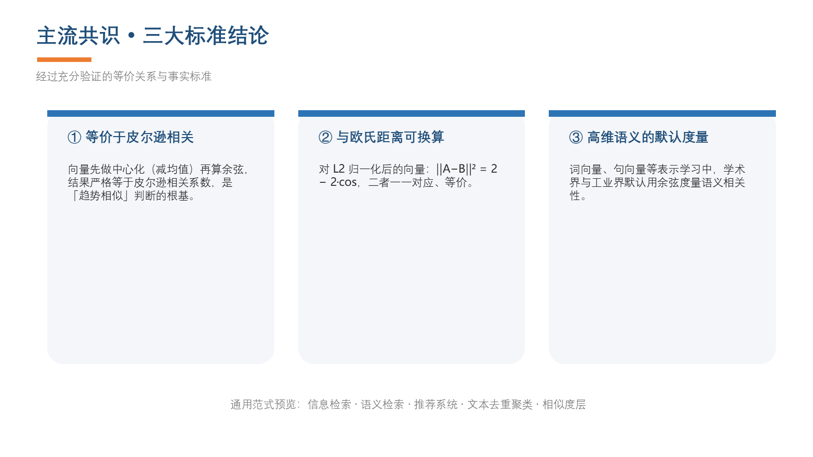
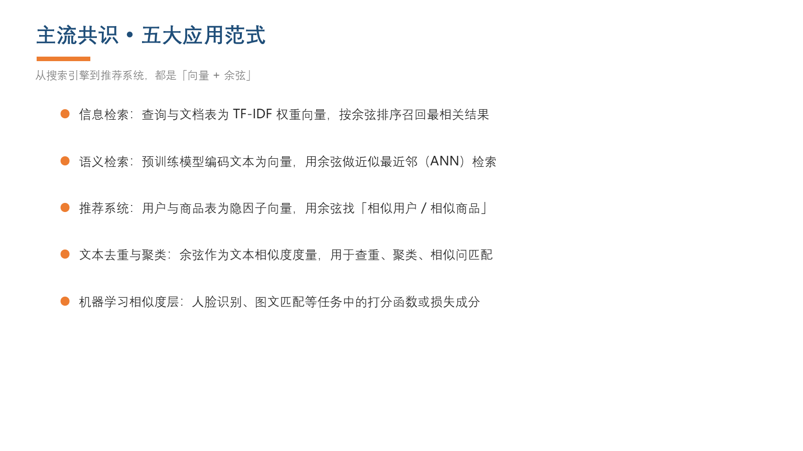
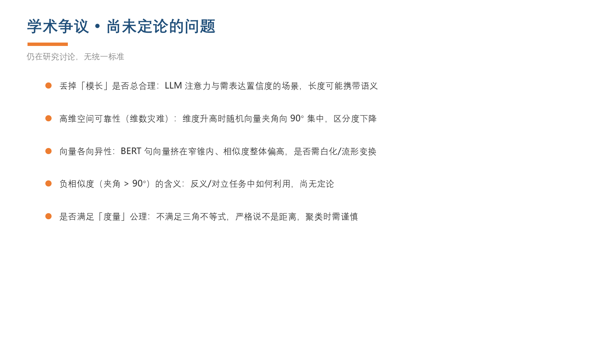
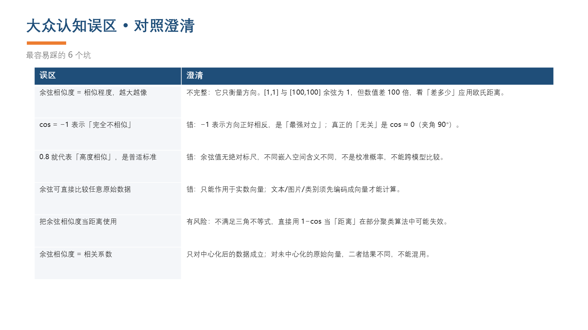
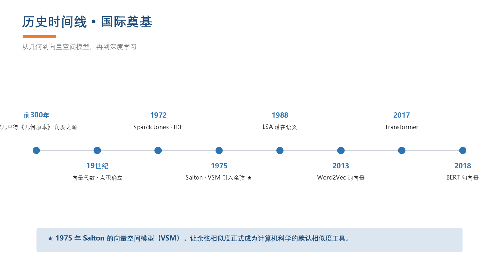
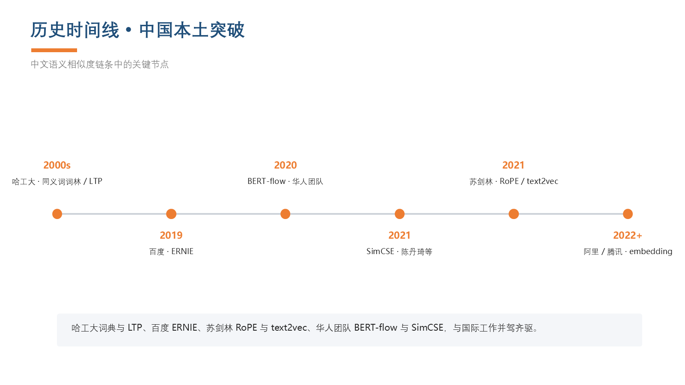
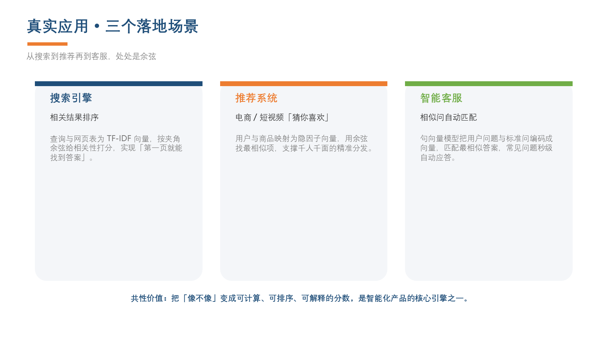
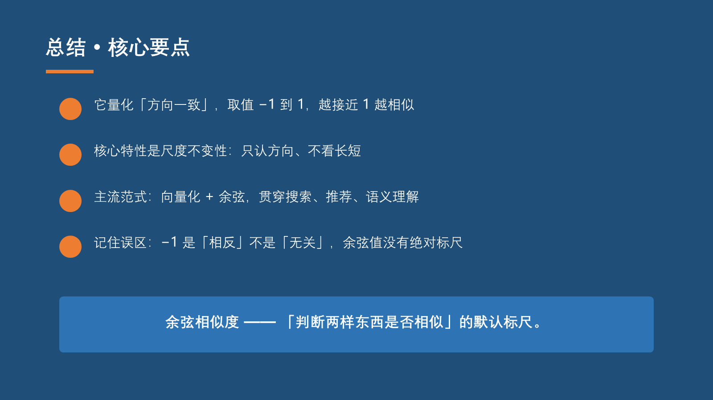
作品说明基于 SolidWorks 完成雨刷（刮水器）连杆机构的建模与装配：包含刷子、底座、连接杆及三级连杆等零部件，通过装配体直观呈现整套刮水机构的组成与配合关系，锻炼了连杆机构的建模与装配能力。
成果形式SolidWorks 三维模型 + 装配体（渲染图 / PDF）
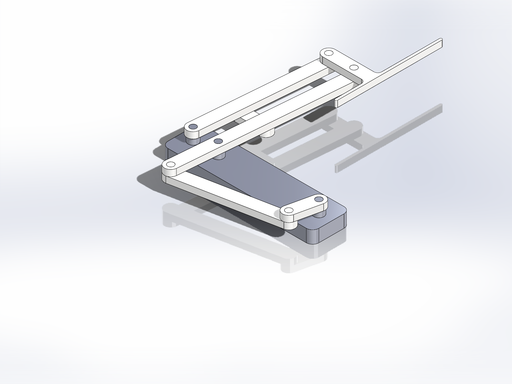